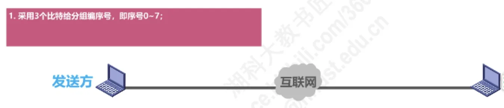
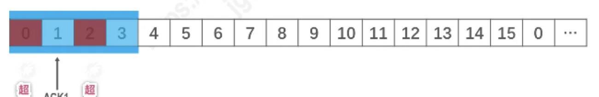

计算机通信与网络 · 第 3 章 数据链路层
3.4.4 可靠传输的实现机制 —— 选择重传协议
回退N帧协议要求接收窗口只能为 1，一个分组的误码就会连累它后面所有正确到达的分组一起被丢弃重传。本节的选择重传协议 SR（Selective Repeat）把接收窗口放大到大于 1，让接收方先把失序但无误码的分组暂存起来，发送方因此只需要重传真正出错的那一个分组。
1. 为什么需要选择重传
回退N帧协议的接收窗口尺寸 WR 只能等于 1，因此接收方只能按序接收正确到达的数据分组。只要有一个数据分组出现误码，它后续那些本来没有误码、也没有乱序的数据分组，就会因为「前面缺一个」而无法被按序接收、统统丢弃。发送方随后不得不把这些分组也全部超时重传——显然是对通信资源的极大浪费。
要进一步提高性能，就得设法只重传出现误码的那个数据分组。为此接收窗口的尺寸 WR 不应再等于 1，而应大于 1：这样接收方就能先收下失序到达但无误码、且序号落在接收窗口内的那些数据分组暂存起来，等所缺的分组重传到达、收齐之后再一并按序送交上层。这就是选择重传协议 SR（Selective Request）。
有一点必须注意：既然要精确定位「哪一个分组出了错」，接收方就不能再采用累积确认，而必须对每个正确接收到的数据分组逐一确认。这是选择重传协议与回退N帧协议最本质的区别之一。
2. 选择重传协议的基本规定
选择重传协议同样用窗口来约束收发双方，可以概括为三条：
- （1）采用 3 个比特给数据分组编序号，即序号为 0～7（一般地，序号比特数为 n 时序号为 0～2n − 1）；
- （2）发送窗口尺寸 WT 的取值范围是 1 < WT ≤ 2n−1，本例取 WT = 4；
- （3）接收窗口尺寸 WR 的取值范围是 1 < WR ≤ WT，本例取 WR = WT = 4。
和回退N帧协议相比，接收窗口从「恒为 1」变成了「可以大于 1，最多取到与发送窗口一样大」。WT = 4 时，序号落在发送窗口内的 0～3 号分组允许发送，窗口之外的暂时不允许发送；接收方也允许接收落在接收窗口内的若干分组，窗口之外的同样不予接收。

收发窗口配合工作的过程如图 2 所示：接收方把失序到达但无误码、且序号落在接收窗口内的数据分组先收下暂存，同时逐一回确认；发送方根据收到的确认按序滑动窗口，等所缺的那个分组被重传并由接收方按序收下之后，暂存的分组才连同它一起按序交付上层。
3. 窗口尺寸为什么这样取
先说发送窗口。它的上界是 2n−1 而不是回退N帧协议里的 2n − 1，这是由接收窗口可以大于 1 决定的：接收方会暂存错序分组，新旧分组在序号空间上「撞车」的风险比回退N帧协议更大，因此发送窗口必须收得更紧。
- 若 WT = 1：与停止-等待协议相同；
- 若 WT > 2n−1：会造成接收方无法分辨新、旧数据分组的问题。
讲义中把发送窗口和接收窗口都故意设成 5（即超过 2n−1 = 4）来演示这个后果：发送方 0～4 号分组连同新一轮的 0～7 号分组会依次发出，而接收方那边的序号也早已转过一圈，接收方无法分辨新、旧数据分组，于是失去可靠传输的能力。
再说接收窗口。它的上界是发送窗口 WT：
- 若 WR = 1：与回退N帧协议相同，接收方只能按序接收；
- 若 WR > WT：没有意义——发送方根本不会发送序号落在发送窗口之外的分组，接收方留出比它更宽的窗口纯属浪费。
4. 发送方与接收方的工作规则
（1）发送方
- 发送窗口尺寸满足 1 < WT ≤ 2n−1，n 是构成分组序号的比特数量；
- 在未收到接收方确认分组的情况下，可以把序号落在发送窗口内的多个数据分组全部发送出去；
- 只有按序收到对已发送数据分组的确认时，发送窗口才能向前相应滑动；若收到未按序到达的确认分组，则对它进行记录，以免其相应的数据分组被超时重发，但发送窗口不能向前滑动。
（2）接收方
- 接收窗口尺寸满足 1 < WR ≤ WT；
- 可以接收未按序到达、但没有误码、并且序号落在接收窗口内的数据分组，把它们暂存起来；
- 为了使发送方仅重传出现差错的分组，不能再采用累积确认，而需要对每个正确接收到的数据分组进行逐一确认；
- 只有在按序接收数据分组之后，接收窗口才能向前相应滑动。
5. 用一道考题检验「不累积确认」
原讲义的这道真题，考的就是选择重传协议不使用累积确认这一点：数据链路层采用选择重传协议传输数据，发送方已发送了 0～3 号数据帧，现已收到 1 号帧的确认，而 0、2 号帧依次超时，则此时需要重传的帧数是多少？

分析时抓住两点：其一，与回退N帧协议不同，选择重传协议不支持累积确认，接收方每正确接收一个数据帧就发回相应的确认帧，所以「收到 1 号帧的确认」只说明 1 号帧正确到达，并不代表 0 号帧也被确认了；其二，题目说 0、2 号帧依次超时，因此需要重传的就是 0 号和 2 号帧，至于已经发送的 3 号帧，题目没有给出任何其他线索，无须考虑。共需重传 2 个帧，对应选项 B。
本节小结
- 回退N帧协议的接收窗口只能为 1，一个分组的误码会连累后续多个正确到达的分组被丢弃、重传，浪费通信资源；选择重传协议把接收窗口放大，只重传真正出错的分组；
- 三条基本规定：n 比特序号、1 < WT ≤ 2n−1、1 < WR ≤ WT（本例 WT = WR = 4）；WT = 1 时退化为停止-等待协议，WT 超过 2n−1 或 WR 超过 WT 都会出问题；
- 接收方可以暂存失序到达但无误码的分组，但必须逐一确认、不能累积确认；接收窗口只在按序接收后才向前滑动；
- 发送方收到未按序到达的确认时只做记录（避免该分组被超时重发），窗口不滑动；只有按序到达的确认才能推动窗口前移；
- 三种可靠传输机制的对比：停止-等待协议（WT = 1、WR = 1）、回退N帧协议（WT > 1、WR = 1、累积确认）、选择重传协议（WT > 1、WR > 1、逐一确认）；三者的序号空间与窗口取值的约束也各不相同。